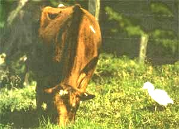
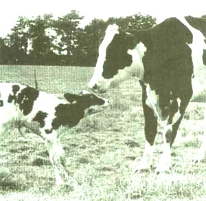

The Trying & Buying Of Your First Cow
Tips on purchasing cattle, including what to look for and where to find it and milking.
By Lisa Faulkner
February/March 1992
Issue # 130 - February/March 1992
By Lisa Faulkner
HOT BISCUITS DRIPPING with real butter you made yourself, thick yellow cream over cereal or berries from the garden, delicious yogurt or cottage cheese that you know is pure and fresh because you've made it-with the help of your own cow, of course. Sound good to you?
It did to us. When we finally escaped from the city and settled into our homestead, we knew we wanted a cow. But having never met one face-to-face, we didn't know how to go about choosing and using a cow. And what would have been as natural as breathing to a country-raised homesteader was an unmapped area for us-as it probably is to some of you.
During the process of our cow quest we acquired information from many sources, including books, neighbors (especially those who have had intimate acquaintance with a cow), pamphlets obtained from the county agent, and, after we found her, from our cow. We hope that getting all of this information together might be a help to those of you whose dreams also include a cow.
A Cow for You
First things first. What kind of cow do you want? This question depends entirely upon the number of people in the family and the amount of milk you can feasibly process. Basically, your choice is between a smaller cow who eats less and produces less milk (but probably more than enough for the average family), and the larger breeds who eat more, cost more to feed, but who also give much larger quantities of milk. The first group consists of Jerseys and Guernseys while the second group includes Holsteins, Milking Shorthorns, Brown Swiss, and Ayrshires.
As we have a small family, we decided on either a Jersey or Guernsey. Both average around 800 to 1,000 pounds, produce milk with a high butterfat content (richer milk), and both have a reputation for being gentle and making good family cows. Being absolute greenhorns, we felt that this last point was very important as we foresaw a long future with our milk cow.
After considerable debate, we settled upon a soulful-eyed Jersey. But if you have a boisterous family or if two or more persons will be doing the milking-which can be very upsetting to a cow-you may opt for a Guernsey as they are slightly calmer.
Perhaps the main disadvantage of the above breeds is that they will not produce a top calf to raise for beef. Even when they are bred to a beef bull, their calf will never get as big as one of the other breeds, and the fat will be yellow. Yellow fat tastes the same, but some people don't like the appearance and it will affect the sale value of your calf. In our area, calves which are obviously part Guernsey or Jersey bring only half the amount that a Holstein calf will bring. Your cow will be producing a calf yearly, so think about what you're going to be doing with the "bonus."
If we had decided on one of the larger breeds, it would probably have been a Holstein. Make no mistake about it, these animals are not small: Their weight ranges from 1,200 to 1,600 pounds. The upside is that they produce a comparably larger amount of milk-at least six gallons a day as opposed to a Jersey or Guernsey's four gallons. Their butterfat content is lower but you'll still have plenty of cream for butter, ice cream, and coffee. If you can use 24 quarts of milk daily, then a Holstein might be for you. In addition, their calves make fine eating, too.
Okay, so you've got a pretty good picture in your mind as to what kind of cow you
want. Where do you find one and what do you look for?
If you want a true dual-purpose breed you might consider the Milking Shorthorn, which has been bred for beef-producing qualities as well as for milking. Get well-acquainted with your potential cow first, however, as this breed has a reputation for kicking and being generally unpleasant to be around. We wondered early on why this breed was not more popular and perhaps that is the reason, but if you can find one with a good disposition you will have a good thing going, with fine beef calves or milking heifers coming along regularly.
We were unable to locate any Brown Swiss in our area, but we understand that they will also produce a nice calf and plenty of milk. Perhaps you who are homesteading in Canada will want to consider the Ayrshire as that breed has a unique capacity for withstanding the cold.
Okay, so you've got a pretty good picture in your mind as to what kind of cow you want. Where do you go to find one and what do you look for? Let's take the where first. There are generally three main sources and we considered all three when we started looking for "our" cow.
AS IN MOST RURAL AREAS, THERE is a weekly livestock auction near us where you can find pigs, horses, sheep, goats, and all kinds and ages of cattle, including milk cows. Then there are dairies that may be selling milk cows for any number of reasons (if you do buy there, be sure you know why your cow is being sold). Lastly you may find a family selling their milk cow. Check the livestock column in your local paper or an ad at your feed or grocery store. But before you settle on any cow, you need to know the following:
Does she kick when she's hand-milked?
Are all four teats normal and is her udder in good condition? In other words, does the milk come freely out the end instead of squirting you in the face from a hole in the side? And is the udder clean with no lumps, tears, or sore places? You will need to feel the udder and preferably test milk her to find out these things.
Has she been tested recently for tuberculosis and brucellosis? This is very important as these diseases can be transmitted to you. Auctions and sales regularly conduct tests and will have written certification of health available.
Is her milk free from clots or streaks of blood?
Is she gentle in the stall? In the pasture? Does she stay in the pasture or is she one of those wanderers who always figures the grass is greener on the other side of the boundary fence?
At an auction "you buy what you see," and many times what you don't see as well. We were warned not to buy from a dairy as they usually sell only their worst producers. We were also told that a dairy wears a cow out in five to six years, as opposed to the 10 to 12 years you can expect from a family cow.
Our initial search of the local paper turned up only blanks until we saw an ad for a dairy going out of business and figured it wouldn't hurt to take a look.
Nothing would have made us greenhorns look like fools faster than going in pretending that we knew more than we did-which was still very little. Hoping for mercy, we simply told the dairy people that we didn't know anything and asked for their help, which in this case was probably the smartest thing we could have done. The dairy had mostly Holsteins but did own four Jerseys, all of which had been hand-milked when the electricity went out for several days the previous winter.
They pointed one out and said she was the gentlest of all their Jerseys, just four years old and carrying her third calf. We knew that four was an ideal age and that it's great if you can find a cow carrying either her third or fourth calf, as she is still young but already a proven producer.
Sensing our mounting interest, the dairy owners asked if we would like to milk her. As I had never been that close to an animal of that size, I volunteered my husband (whose experience included milking a goat-once). After some struggle, he did manage to get some milk out of the cow (and guess who now milks her 98% of the time).
Despite our inexperience, our hands-on road test taught us some important things: She didn't kick, her udder and teats were okay, and she'd been tested monthly at the dairy for disease. So far so good, but we had to take their word about milk production. Their estimate was four gallons a day but we later discovered she'd give five gallons a day on good pasture in the summer. (If you can see milk production records on a cow, so much the better.)
Bear in mind, though, that a cow always gives the most milk for the first few months after she freshens (or gives birth to her calf), and then drops her production as she ends her lactation period-especially if that time corresponds with winter.
We were pretty excited when the truck arrived with our new cow, but it brought
some problems as well.
We liked everything about our gentle Jersey, and arranged to buy her. Okay, you might ask, what's that worth? A producing milk cow is generally worth $600 to $800 depending on her age, her quality, and who you buy her from. That's a lot of money for any household, but remember that an investment is being made that will pay dividends for years in milk, butter, and a variety of other products. In addition, should you wish to breed her, your investment will pay off with a calf once a year.
We were pretty excited when the truck arrived with our cow, but it brought some problems as well. For one, we were now the proud owners of a cow who was not only unaccustomed to the halters we tried to coax her into, but the pasture into which we tried to lead her as well. Matter of fact, she wasn't used to extended movement at all as she'd only been handled for milking.
This problem was reduced to trivial status when we noticed that it was almost time to milk...and we didn't know how. Well, if we ever wanted proof of her disposition, we got it that first night when our new cow stood patiently for over an hour without fidgeting or kicking while we milked her in a very rumbling manner. The good news is that-even with hand-milking-this is only a 15-minute job...once you've got the hang of it.
Before laying a finger on a teat, go to your dealer who handles dairy supplies and get a gallon of udder sanitizer (essentially an iodine solution). Put a teaspoon or two of this in a wash bucket and add some warm water. Take the mixture with you on your way to milk and carefully wash the cow's udder and teats with the disinfectant, then dry them thoroughly with paper towels. Dry your hands similarly and then squirt the few first few ounces of milk on the ground to get rid of any bacteria that may have lodged in the ends.
Here was our first surprise: You don't simply pull down on the teat, as so many think, you squeeze gradually from the top down with the main pressure saved for the little finger, which forces the milk out. Be sure to open your hand completely before the next squeeze to allow the teat to fill again. After you have most of the milk out you should begin "stripping" the cow by squeezing the teats from the top down between thumb and forefinger.
Be certain to get all of the milk out during this time or the cow could develop an infection called mastitis which, among other things, causes her to produce less and less milk.
Handling the milk in a manner that assures cleanliness is also very important. You will need to wash and scald all your milking utensils, including the milk bucket, each time you use them. Do not use a towel to dry the bucket after washing-hang it upside down on a rack to allow the air to get to it. We found that a seamless stainless steel bucket with a cover works best because it has no cracks for the bacteria to hide in. The cover is necessary to keep the empty bucket clean while you're on the way to milk and to keep din and bugs at bay afterwards.
AFTER MILKING, TAKE THE BOUNTY directly to the house, strain though a filter, then refrigerate. We keep our milk in gallon glass jars that were originally filled with mayonnaise, pickles, or mustard (almost any restaurant will have these and they'll usually let them go for a dollar or less each). Filters are available from the same place where you found the sanitizer and are simply placed in a large strainer and positioned over the gallon jars before you pour the milk into them.
Now, with any luck, you're going to have from four to six gallons (that's 16 to 24 quarts, folks!) in your fridge and no room for anything else. Don't panic! If you've got enough people in your tribe (or enough neighbors and friends) then most of it will go the way of good milk the world over. Don't forget that you now have plenty of supplies for butter, ice cream, cottage cheese, hard cheese, yogurt, and custards. If you still find that there is considerable excess, now might be a great time to have some pigs and/or chickens around the home: They can live off a mixture of dairy and other products.
Perhaps you're still wondering how you get the cow to stick around while you do all that cleaning and milking twice a day. Our cow was accustomed to milking in a stanchion-the most common way of controlling a milk cow-and chances are that yours will be as well. Because most folks feed their cows at milking time, a cow is usually cooperative about going into the stanchion.
If you've never seen a stanchion, you can either go to a dairy where they have built wooden ones and crib their design elements, or you can buy a ready-made steel one. Basically, a stanchion is designed so that when the cow puts her head through to eat out of the manger, you're able to close it around her neck so that her head cannot be withdrawn. She's still free to move her hind quarters about and kick, but she can't leave. If you are unfortunate enough to have a cow who kicks, there are hobbles made to fit around their back legs which provide a modicum of security, but take care.
If building or buying a stanchion is impossible, it's perfectly acceptable to just tie her up. If your cow hasn't had any experience with halters, she will probably not be particularly enthusiastic about being handled around the head. The first time you try it, it'll take two people as she'll have to be cornered in a stall or corral-though not against barbed wire-and held while the halter is slipped on.
In about a week the cow should be leading well, but it's not out of the question for the process to take somewhat longer. Leading the cow initially also takes two people: one in front to hold the halter and one in back to carefully encourage her-with a swat, if necessary. Take extra care when tying her up so that she's comfortable but held securely in place. You don't want to be explaining to your neighbors why your cow just tore through his garden and clothesline.
Once you have the cow under control, it's time to start getting her used to daily grooming. Although ours objected mightily to this the first couple of times, she grew to love it and now falls asleep when we groom her. Not only will your cow feel better with a daily grooming, but it will get rid of the loose hair and dirt that might otherwise fall into the milk. Just brush in the direction of the hair and you'll do perfectly.
In the summer your cow can get along just fine living in the pasture day and night, but plan to have some shelter for her in the winter. It doesn't have to be fancy, just a simple stall or shed which pro tects against prevailing winds and keeps bedding and feed dry. Bedding with pine shavings works better than straw because it's easier to remove the "cow pies," but it's certainly not a critical matter. Just use whatever is most available in your area. Remember that the urine-stained bedding is high in nitrogen and other nutrients and should be added to your compost pile as well as manure.
Our cow was accustomed to milking in a stanchion-the most common way of
controlling a cow-and chances are that yours will be as well.
Don't overlook a good source of fresh water for your cow as she will need a great deal, up to 60 gallons a day. If you live in a cold climate, a heater must be added to her stock tank because-even if you are careful to break the ice periodically-she'll still cut down on her water consumption and the milk output will be affected.
We've mentioned pasture several times, and without a doubt this is the finest feed a cow can have, but it has to be real pasture in good condition, not just a weedy area that looks green. Some folks continue to feed their cows a good legume hay such as alfalfa even when they have pasture, but if you don't want the expense of feeding in summer as well as in winter-and you have good pasture-she'll get along just fine with that and some grain.
We feed a 12% protein dairy mix that we get from the feed store. The usual amount of grain to feed is one half to one pound for each quart of milk that is produced daily (that amount can be cut in half during the cow's dry period however).
She'll also need constant access to salt or a salt/mineral block. In winter (or whenever she does not have free access to pasture), be sure to keep good hay in front of her 24 hours a day. Alfalfa is highest in quality but can be mixed with grass hay if you're short of alfalfa.
The main drawback to acquiring a cow for your homestead is the fact that you are tied down. Bossy must be milked twice a day, and staying on schedule is really very important. It's no myth that a contented cow produces more on the same amount of feed, and nothing makes a cow more contented than being able to count on the same person coming out to milk her at the same time every day.
And in case you think that all the advantages of a cow are gustatory, they're not. Milking time has much to offer. It's a chance to sit with your head against a warm cow while the sunrise paints a new day all around you. It's a chance to feel her developing calf as he or she bumps you in the shoulder. It's simply a chance to be part of the reality of life with no plasticity involved. And that's just fun for us. Good milkin'.
Editor's note: MOTHER wishes to thank Andrew Brons and Reginald West for their assistance with this article.

PHOTOGRAPH ? M.HALMINSKI/SUPERSTOCK
|

PHOTOGRAPH ? JEROME WEXLER/THE NATIONAL AUDUBON SOCIETY/PR
|
|